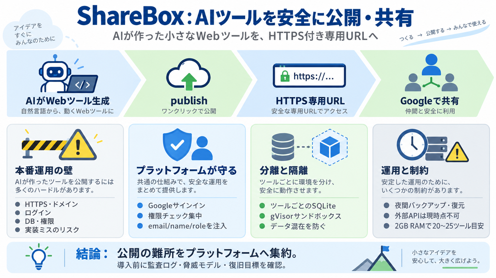

How to Self-Host a Code Execution Sandbox for AI Agents (2026) | Beam
What isolation does Beam use when self-hosted? gVisor + runc — the same user-space-kernel model as the managed product. …

What isolation does Beam use when self-hosted? gVisor + runc — the same user-space-kernel model as the managed product. …
## What is gVisor? gVisor is an open-source workload isolation solution to safely run untrusted code, containers and ap…
Say goodbye to manual key handovers and long queues. Sharebox is an automated kiosk and software platform built for 24/7…
much as possible, thus facilitating the daily life of dealers and moving away from isolated solutions thanks to modern A…
| 9th | Logo for OKGO OKGO 2022, Los Angeles (United States), Unfunded | Digital key sharing and management solutions …